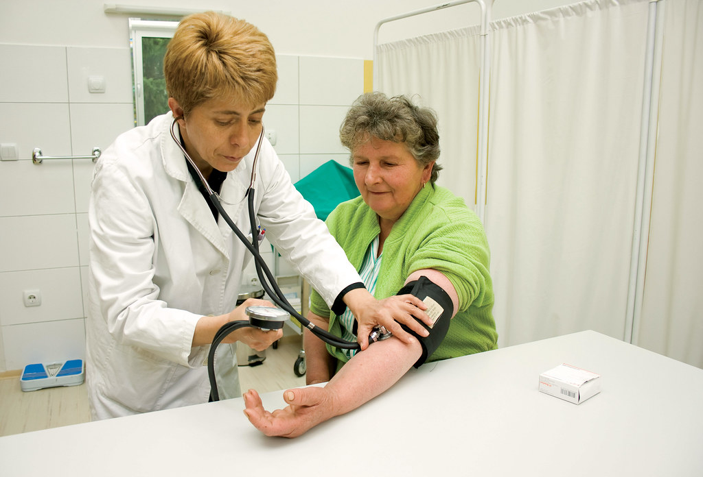

21 AGO 24
2

A medicina e a tecnologia
A interseção entre medicina e tecnologia está revolucionando a saúde, com avanços como a telemedicina,
que amplia o acesso a cuidados médicos, e a inteligência artificial, que auxilia no diagnóstico e tratamento personalizado.
Tecnologias como wearables e dispositivos de monitoramento remoto permitem o acompanhamento contínuo de pacientes, enquanto
a robótica e a impressão 3D estão transformando cirurgias e próteses. Essas inovações estão melhorando a precisão,
eficiência e acessibilidade dos cuidados de saúde, abrindo novas fronteiras para o futuro da medicina.